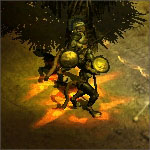

MONSTERS
Do not expect an easy victory over the forces of Hell. Median XL: Ultimative features an assortment of new monsters and beefs up the familiar monsters with improved statistics and more intelligent and aggressive behaviour.
Elite monsters
The elite forces of the demonic hordes are much more dangerous than their lesser underlings. Elite monsters are similar to their lesser species but have a yellow name, higher statistics and usually employ additional or different attacks and defences.
Heroic monsters
Even stronger than elite monsters, heroic monsters are thankfully confined to their own dungeons which are usually out of the way... usually. Rumour has it that the guardians of Baal himself are among them.
Consult the page on HEROIC LEVELS for an overview of where to hunt these fiends.
Veteran monsters
The Prime Evils' ace in the hole. These are the few demons who survived the battle below Tristram and have only grown stronger. They appear very rarely and only in specific areas, but you'll know it when you find them.
Veteran monsters are unique in the game and have a dark green name and powerful attacks and defences.
Ubermonsters
Median XL: Ultimative features many uberquests, the ultimate challenges of the game. Uberquest monsters are the toughest and hardest monsters in the game. There is usually something 'special' about ubermonsters, from a shield aura that grants the boss an immunity shield to the ability to resurrect upon death.
See Uberquests Section for more information about the available uberquests in Median XL: Ultimative.
BESTIARY
The below list is incomplete. As for the other monsters found throughout Sanctuary, no one has lived to describe them...
Pests
These semi-intelligent but still fairly dumb demon punks are dangerous in numbers and much more aggressive than their Fallen One cousins. They attack with little regard for their own life, carrying an explosive device set to trigger when the creature goes down in combat and scatter a hail of proximity fuzed bombs in all directions.
Elite Pests: Gremlins & Detonators
Social standing among pests is not based on strength or intelligence, but on the amount of explosives an individual can amass. Elite pest soldiers often pack unstable alchemical concoctions or fireball devices and sometimes even eschew any form of defense so they would get slain faster and unleash napalm hell.
Runepriests
Ordinarily, one who burns to death in the desert turns into a shriveled corpse. Not so with these undead, who had the misfortune of breathing their last near one of a few cursed burial tombs. Bound to the building's malicious influence, they defend it with unholy fervour and bolts of unnatural poison.
Elite Runepriests: Gothi
The cursed buildings in the desert are the work of mortal hands, perhaps with some demonic influence, but the cities of Hell are dangerously haunted on an entirely different level. Brave but foolish mortals who die within their walls will serve the city's spirits in afterlife forever.
Rockatrices
A seemingly innocuous, if particularly large, scorpid creature. Its bright warning colours communicate to potential predators its magical weapon: a rockatrice's hiss turns its victim to stone. Although the stone curse wears off with time, other nearby threats may seize the opportunity to strike at the slowed and vulnerable adventurer.
Elite Rockatrices: Basilisks
Most rockatrices only hiss when cornered, but the aggressive basilisks use this attack with very little provocation. Between their fierce aggression and tough scales, basilisks are the most dangerous rockatrices on Sanctuary.
Dark Fey
Hidden from human eyes is another world, visible only to those who bother to look between the scrubs and branches of the primeval forests. Unlike the towering and rampaging humans, most fey only wish to be left alone. Some of them however wanted more - whether it be vengeance for a razed forest or a desire for power, they left their forests and joined Diablo's dark legions. The aloof and indignant dark fey enrage when harmed and possess the supernatural ability to summon walls of force at will to trap the unwary hero.
Elite Dark Fey: Unseelie Dames
Darkness falls! These fey are fighting for a lot more than personal power. They want to rule the world with Diablo's help, and will let nothing stand in their way. Their greatest asset is their diabolical curse of doom, slowing down their victim like a nightmare.
Trolls
Dimwitted and easy to sway to the demonic cause with the promise of shiny baubles, trolls are the end point of the accelerated evolution of a common species of Kehjistani frog caused by rampant use of death magic. Although not particularly intelligent or strong warriors, trolls are able to phase themselves into the ethereal plane. They often use this Trollphase ability to initiate a fight while being immune to retaliation until the spell wears off. Umad?
Elite Trolls: Ash Trolls
The least stupid trolls were adopted by Diablo to serve in his unholy sanctuary - serve adventurers, that is. Ash trolls are the strongest and most dangerous of their kind.
Vampires
The mystical dead awake to defend their former master in life, Mephisto. The Lord of Hatred's vampiric undead priesthood corrupts the land and has the power to summon spinning discs of bloodforged steel.
Elite Vampires: Daystars & Deathless
The former priesthood of the mad angel Inarius, slain at the gates of the Cathedral of Vanity and raised by Inarius as holy aberrations to fend off the edyrem uprising. Do not let the golden halo blind you, they are as cruel as the angel himself.
Quill Rats
These mutated porcupines prey on unarmed victims and are not much of a threat to a well-armed adventurer. Still, their poison spines can get under the skin and slowly wear down a hero, and they have recently evolved the ability to spit grooved spines steered by an insect-like brain that unerringly arc towards their targets. When slain, the brittle spines scatter over a wide area, causing a lot of collateral damage.
Elite Quill Rats: Quill Bears
Rarely seen before, this species of quill rat is gigantic, shooting spines that are as large as chitinous war swords.
Elite Quill Rats: Cruciators
The offspring of the rats that inhabited Kurast, they have absorbed some of the city's holy radiance. Twisted by Mephisto, they now shoot glittering blades of fire.
Elite Quill Rats: Trap Rats
The lethal trap rats have evolved an air bladder that allows them to launch a veritable barrage of spines. A pack of trap rats can put hundreds of spines into the air in the span of a few seconds.
Fungi
In the Dark Wanderer's wake of destruction, the flora and fauna of the wild mutated and grew hungry for human flesh. Giant mosquitoes and frogs are among the best known examples, but even the local mushrooms have grown a mean streak and glow with biological electricity.
Elite Fungi: Shrooms
Harvested by the Kehjistani people for their psychotropic properties, the malicious influence of Mephisto caused these mushrooms to grow to ten times their size and go on the offensive, leaving a dangerous trail of sparkling acid spores in their wake.
Spear Cats
The jungle cats, native to Kehjistan and teleported by Baal to Aranoch, hunt in packs and can overwhelm any adventurer. If their attacks strike true, they may become enraged and hit even harder.
Spear Cat Priestesses
The more powerful spear cat clans are led by a Priestess who aids her underlings with a battle aura of fanaticism. The elder Priestesses of the clans are favoured by the earth spirits, which may strike back when the priestess is slain in battle...
Elite Spear Cats: Black Cats
These bringers of bad luck inflict an unholy curse with their hexed weapons. The curse loads down the victim with the weight of a million damned spirits and blocks all forms of magical and alchemical healing.
Elite Spear Cats: Hellcats
For all their savagery, the former warlocks of the spear cat clans believe in fairness and honour on the battlefield... at least on the side of the enemy. Their antimagic aura disables ranged attacks, forcing a hero to battle them in melee combat or send in summoned creatures.

Raiders
These wiry desert demons are native to the wastes of Aranoch. Spawned from wind and fire by the enormous thunderstorms following the creation of the mortal plane, they lack physical might but make up for it through magic and trickery.
Elite Raiders: Djinns & Ifrits
Worshipped as gods by some nomadic tribes, the leaders of the raider castes have augmented their magical abilities with simple technology. Ifrits are said to employ hidden explosive devices to devastating effect in the confusion caused by their teleportation attack. Adventurers are adviced to check their surroundings for booby traps after a djinn or ifrit attack.
Sinners
The fate of these lost souls is clear to anyone who has ever seen them. Aside from serving as a dire warning to those who would stray from the path of Heaven, they serve as shock troops for the Prime Evils, seeking out living mortals to share their agony.
Elite Sinners: Cenobites
It takes more than a few mortal sins to end up as a Cenobite. Some would argue that the reverse is true: this is what happens to the dark mortal worshippers of the Prime Evils who show repentence. Beware their blood magic spells.
Succubi
Diablo’s handmaidens emerge in a fury from the labyrinth beneath Tristram wielding vicious bloodstars and applying evasive hit and run tactics. When slain, not only do they shatter into a rainbow of corrupted shards, but the dying curse of the Soul Burners strips their killer of all magical defences, making him or her easy prey for the vengeance of their sisters.
Elite Succubi: Dirges
It is said that the Dirge flights were spawned by Baal from the flesh and bones of Diablo’s fallen succubi beneath Tristram. Whatever their origin, they move at demonic speeds and cast a vicious variant of the bloodstar which poisons the victim and eats away their flesh until nothing remains.
Elite Succubi: Silverbolts & Thunderbolts
When these lesser celestials dropped their halos and dived off the heavenly cliffs, they picked up the power to hurl devastating lightning bolts on their way down.
Frog Princes
Underestimated by many, Frog Princes are said to be the final resting place of cursed princes of the ancient past. Their leaping charge is a dangerous threat, but destroying their amphibious form may unleash the trapped spirit in a cascade of crystalline frost novas. Frog hunters are adviced to back off out of range immediately or run directly through the spirit to break the spell.
Elite Frog Demons: Marbled Frogs
There exists a species of Kehjistani frog that secretes sticky slime to trap insects. Considered one of the best ways to exterminate an insect plague, a single marbled frog will eat over two thousand mosquitoes a day, converting them into more mucuous slime. Mephisto created a giant version to terrorise the inhabitants of Kurast. Between its charging leap and vicious slowing strike, there is no escape.
Elite Frog Demons: Blood Princes
The spirit imprisoned in these frogs is most certainly not human. It is rumoured that this is the punishment meted out by Diablo for disobedience among his legions… When you kill a Fire Prince, keep a very safe distance from the corpse when the warding spell disintegrates or face a fiery death.
Elite Frog Demons: Hypnotoads
It is said that an ancient royal family used the magical powers of a djinn to manipulate minds and even time itself. An evil sorcerer cursed the family, turning them into toads and making off with the sands of time. Their stare is oddly hypnotic and when the frog is slain and releases its spirit from its cursed existence, time itself seems to stand still in its wake.
Undead Magistrates
Lacking the agility and physical strength of their demonic cousins , the entirety of Diablo’s inner circle of mages and warlocks was destroyed beneath Tristram when the labyrinth collapsed. Revived by Baal to fight in his campaign against Mount Arreat, their once glittering robes and perfect ivory features made place for the stench of undeath and a haunting spirit attack that seeks out and chases down their prey, inflicting a deadly spirit illness on touch.
Elite Undead Magistrates: Dark Vizjerei
It is unknown what tomb Baal defiled to acquire the raw materials for these. Eschewing the homing ability of their lesser brothers’ Venomous Spirit attack, they cast poisonous globes that leave clouds of death and decay in their wake. Duck and cower.
Wandering Mages
The ancient Sarandesh mage clan seems to have no central authority or repository. Its members roam the world, aligning themselves with any lord or organised religion that requires their services. They are summoners, weak in direct combat but capable of summoning swarms of diminutive imps to shred their enemies to pieces.
Elite Wandering Mages: Cursed Sarandesh
Inevitably, many Sarandeshi end up seeking out the forces of Hell for more power. The tiny imps are easy to underestimate, but dangerous in swarms, and those mages with the guts to sell their soul to the devil know exactly which species of imp is the most vicious.
Magma Demons
The universe came within a scale's thickness of being rid of Mephisto forever. But the angel blade with his name on it only struck a glancing blow, and from the droplets of burning blood spawned a legion of Magma Demons that forced the heavenly host back out of Hell.
Elite Magma Demons: Blood Stones
Magma Demons are semi-sentient animated rock and have very simple battle tactics. Throwing burning rocks and proceeding to clobber the victim is good. Throwing more fire and clobbering harder is better. Throwing an insane barrage of homing fire before closing in is best.
Lightning Demons
The ex-priesthood of Zakarum, affected by the corruption of Travincal by Mephisto. Under his dark influence, they forgot about blessings for the weak and holy thunder for the heathens and remember only the holy thunder part. Their streaming lightning attack is more powerful if it hits the victim in the back, and the hero should be aware that even their dead corpses are still buzzing with static energy and will deliver a paralysing jolt on contact.
Elite Lightning Demons: Core Lords
If you live in Kehjistan, one of these may resemble your former priest before he was promoted to bishop, then patriarch, then one of the Church leaders in Travincal. Mephisto reserved his greatest gifts for the elite of the Zakarum Church. Beware their forked lightning stream and the dangerous arcs that burst from the corpse when the demon breathes his last and loses his hold over the containment wards. Do not turn your back to them or the damage will multiply!
Elite Lightning Demons: Cloud Dukes
This Lightning Demon order eschews the destructive power of the lightning stream attack in favour of the coverage of their peculiar twisted version of what mortals would call charged bolts. Its damage potential may be lower, but for the victim there is no escape from the approaching wall of lightning!